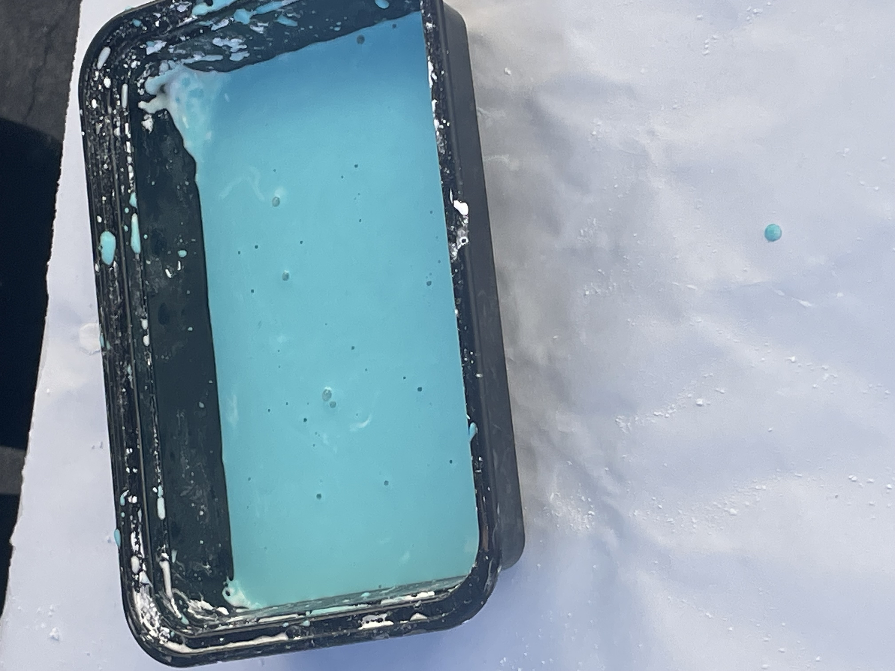
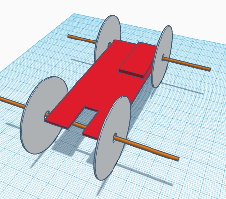
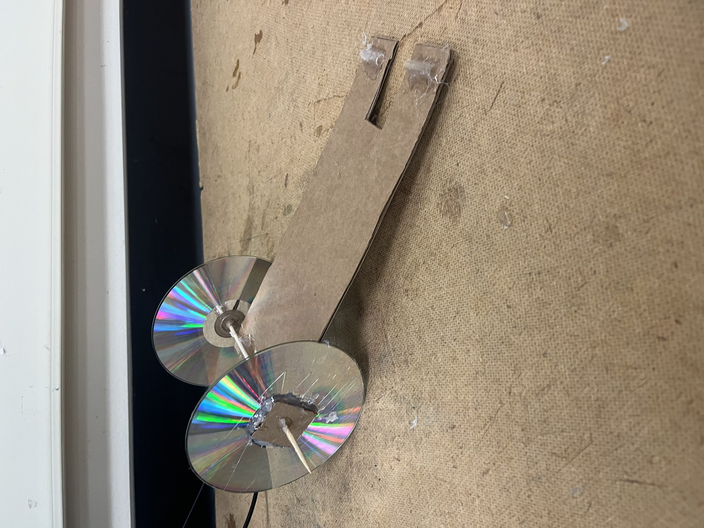
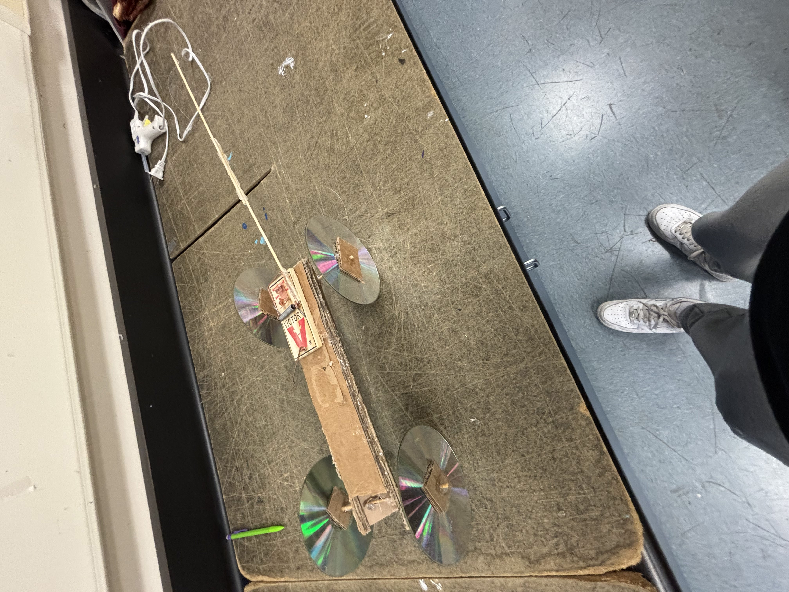
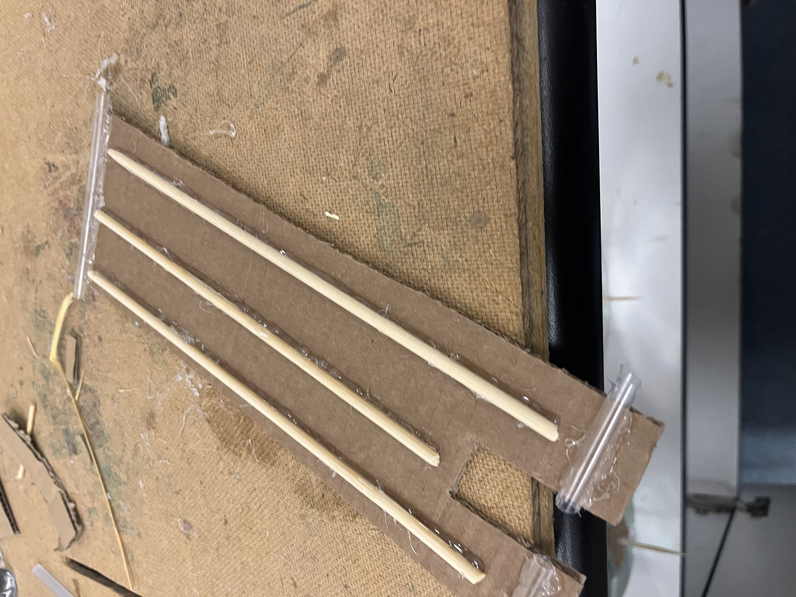
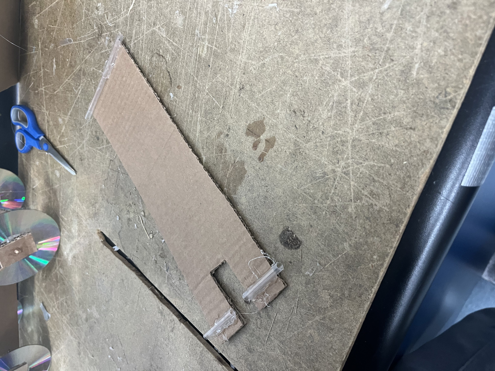
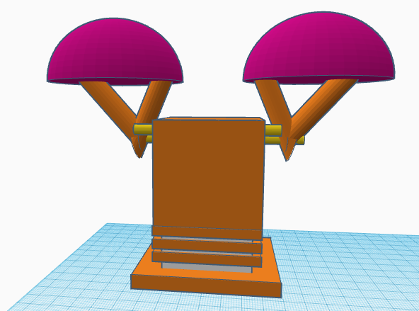
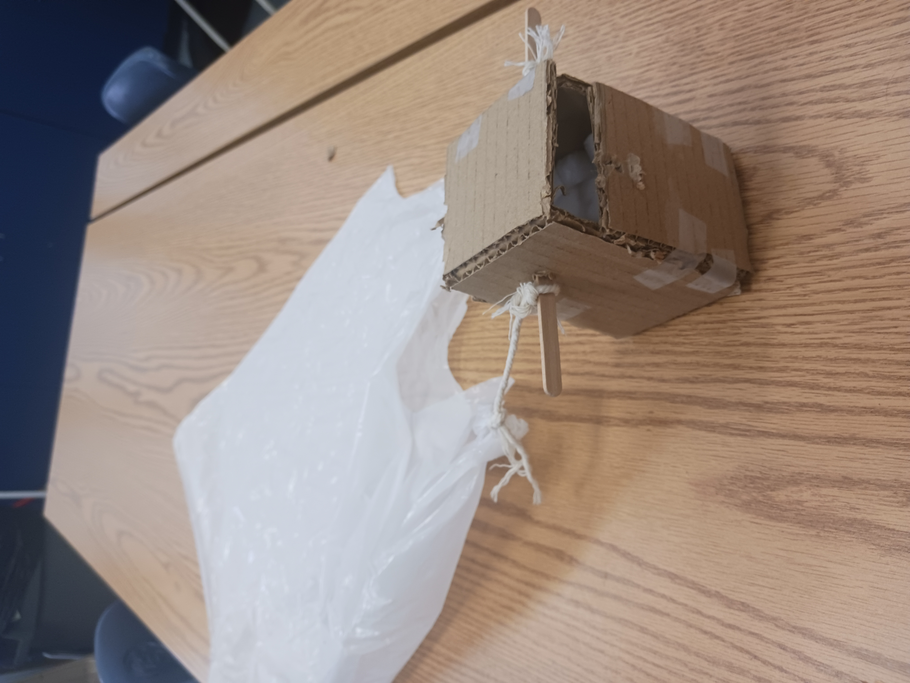

Update 1
This week I learned about chemical engineering and how it is used, studied, and how its important. We practiced some basic chemical engineering by making ooblek with cornstarch and water, we observed it as well like how it melts when left alone and hardens when copressed. We learned about the fields you could work in and what exactly you'd do. Along with the aspects of
Update 2
This week was an eventful week we had started with a base model of our mousetrap car on tinkerkad tp get an idea on how it's supposed to roll the farthest. So far I believe that our car is going well we have the base idea of it and all we are continuing to imporve it we have decided to make the rod and the point from the wheels to the mousetrap the same length, although it has less power it is more efficient and we believe that tradeoff is worth it. Next week I plan to finish my tinkercad and start preparing the materials for the build that I will start hopefully around Wednsday or Thursday.


Update 3
Last week I finsihed my tinkerkad around tuesday and for the rest of the week I had started to work on my car and maneged to complete the wheels, body, and axles for the cars. My goal this week is to finish my car and be able to test and make modifications to it next week. This weekend I spent it with my grandma watching thr gramnys.

Update 4
This week I fisnished my first car and had extra time to start my second car, the base model has been done but there is still lots of work to do. I have to make a longer string and reduce the resistent inbetween the wheels and the straw holding it.


Update 5
My car was a 4 wheeled car with a thin body supportted with a wooden rod so the cardboard body doesn't fold in itself with a moustrap in the center to work as a lever to pull the axle therefor pulling the wheels. It performed rather well before the pin fell out but was still partly functional, it averaged around 45 feet before the pin fell out. The furthest distance of our first car was between 14 feet and the furthest distance of our second car was 47 feet. The difference between our cars was amount of resistance in between the wheels whci was stopping the wheels from rotating smoothly and wheel straightness which was adding curve to the car. If I was to make a 3rd car I would make the body, string and rod longer for longer distances, because with my second car it worked flawlessly but would have much greater distances if it was longer.

Update 6
The current project i'm working on is an egg drop from 3 stories and needs to not crack or break. We are trying to slow down the egg im mid air and have a spring mechanism so it doesn't just hit the floor full force but releases the force once it comes in contact. Im scared it tips over mid air and lands the wrong way allowing the gg to break. The weakest part of out design is the trash bag, it may rip and if so it will not go well.

Update 7
My egg drop had a very simplistic idea, it was a box with cotton balls inside to surrpress the impact from the fall to the egg. With a parachute to slow the descent for maximun safety. During Spring Break I will stay home and enjoy time with my family and eat food and gain 10 pounds at least.
